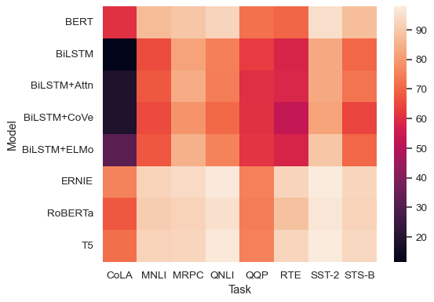
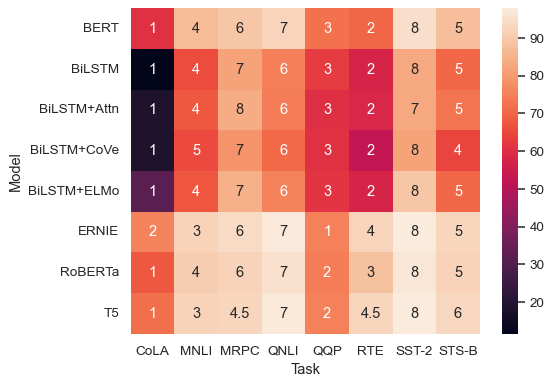
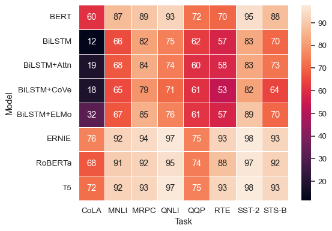
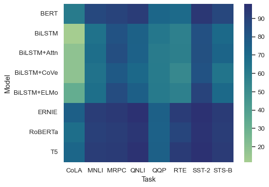
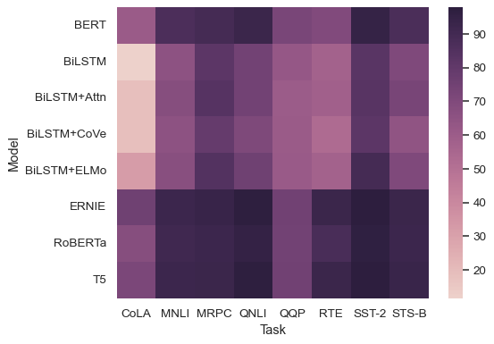
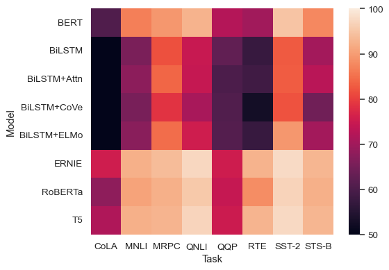
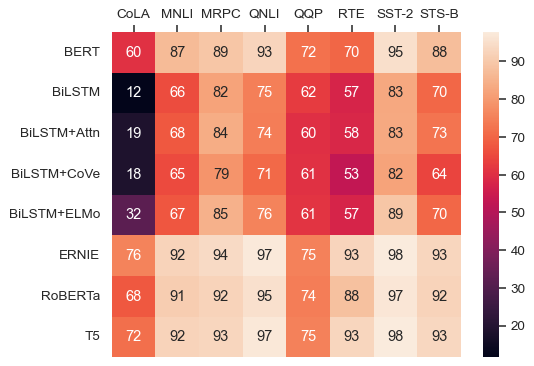

seaborn.heatmap#
- seaborn.heatmap(data, *, vmin=None, vmax=None, cmap=None, center=None, robust=False, annot=None, fmt='.2g', annot_kws=None, linewidths=0, linecolor='white', cbar=True, cbar_kws=None, cbar_ax=None, square=False, xticklabels='auto', yticklabels='auto', mask=None, ax=None, **kwargs)#
Plot rectangular data as a color-encoded matrix.
This is an Axes-level function and will draw the heatmap into the currently-active Axes if none is provided to the
axargument. Part of this Axes space will be taken and used to plot a colormap, unlesscbaris False or a separate Axes is provided tocbar_ax.- Parameters:
- datarectangular dataset
2D dataset that can be coerced into an ndarray. If a Pandas DataFrame is provided, the index/column information will be used to label the columns and rows.
- vmin, vmaxfloats, optional
Values to anchor the colormap, otherwise they are inferred from the data and other keyword arguments.
- cmapmatplotlib colormap name or object, or list of colors, optional
The mapping from data values to color space. If not provided, the default will depend on whether
centeris set.- centerfloat, optional
The value at which to center the colormap when plotting divergent data. Using this parameter will change the default
cmapif none is specified.- robustbool, optional
If True and
vminorvmaxare absent, the colormap range is computed with robust quantiles instead of the extreme values.- annotbool or rectangular dataset, optional
If True, write the data value in each cell. If an array-like with the same shape as
data, then use this to annotate the heatmap instead of the data. Note that DataFrames will match on position, not index.- fmtstr, optional
String formatting code to use when adding annotations.
- annot_kwsdict of key, value mappings, optional
Keyword arguments for
matplotlib.axes.Axes.text()whenannotis True.- linewidthsfloat, optional
Width of the lines that will divide each cell.
- linecolorcolor, optional
Color of the lines that will divide each cell.
- cbarbool, optional
Whether to draw a colorbar.
- cbar_kwsdict of key, value mappings, optional
Keyword arguments for
matplotlib.figure.Figure.colorbar().- cbar_axmatplotlib Axes, optional
Axes in which to draw the colorbar, otherwise take space from the main Axes.
- squarebool, optional
If True, set the Axes aspect to “equal” so each cell will be square-shaped.
- xticklabels, yticklabels“auto”, bool, list-like, or int, optional
If True, plot the column names of the dataframe. If False, don’t plot the column names. If list-like, plot these alternate labels as the xticklabels. If an integer, use the column names but plot only every n label. If “auto”, try to densely plot non-overlapping labels.
- maskbool array or DataFrame, optional
If passed, data will not be shown in cells where
maskis True. Cells with missing values are automatically masked.- axmatplotlib Axes, optional
Axes in which to draw the plot, otherwise use the currently-active Axes.
- kwargsother keyword arguments
All other keyword arguments are passed to
matplotlib.axes.Axes.pcolormesh().
- Returns:
- axmatplotlib Axes
Axes object with the heatmap.
See also
clustermapPlot a matrix using hierarchical clustering to arrange the rows and columns.
Examples
Pass a
DataFrameto plot with indices as row/column labels:glue = sns.load_dataset("glue").pivot(index="Model", columns="Task", values="Score") sns.heatmap(glue)
Use
annotto represent the cell values with text:sns.heatmap(glue, annot=True)

Control the annotations with a formatting string:
sns.heatmap(glue, annot=True, fmt=".1f")

Use a separate dataframe for the annotations:
sns.heatmap(glue, annot=glue.rank(axis="columns"))
Add lines between cells:
sns.heatmap(glue, annot=True, linewidth=.5)
Select a different colormap by name:
sns.heatmap(glue, cmap="crest")
Or pass a colormap object:
sns.heatmap(glue, cmap=sns.cubehelix_palette(as_cmap=True))
Set the colormap norm (data values corresponding to minimum and maximum points):
sns.heatmap(glue, vmin=50, vmax=100)
Use methods on the
matplotlib.axes.Axesobject to tweak the plot:ax = sns.heatmap(glue, annot=True) ax.set(xlabel="", ylabel="") ax.xaxis.tick_top()